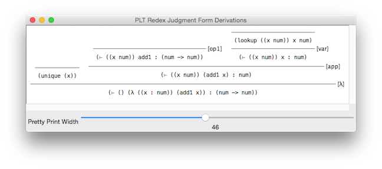
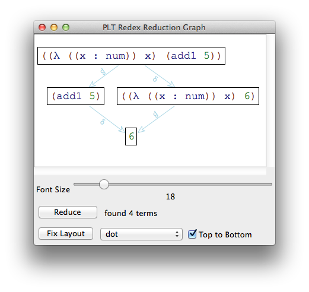
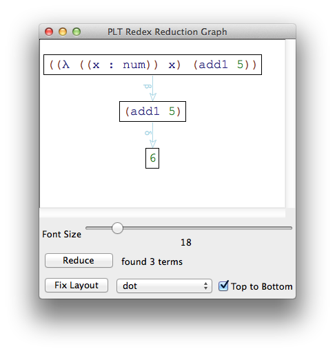
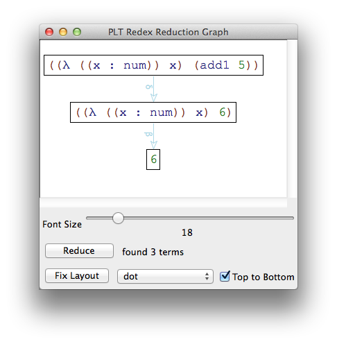
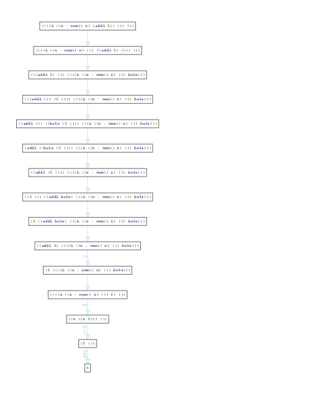
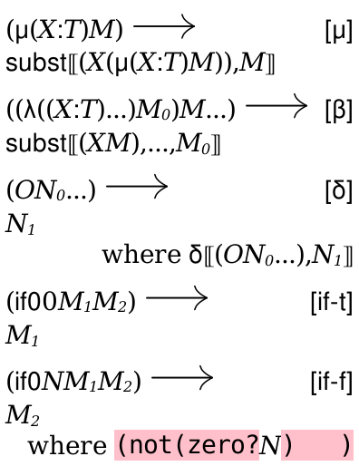

An Introduction to Redex with Abstracting Abstract Machines (v0.6)

David Van Horn <dvanhorn@cs.umd.edu>
Last updated: Friday, November 27th, 2020
1 Introduction
This is a “living” artifact: please submit bug reports and pull requests whenever you spot problems in this document. https://github.com/dvanhorn/redex-aam-tutorial/
This article provides a brief introduction to the Redex programming language for semantic modelling. It does so by developing several semantic models of a simple programming language and then showing how to construct a program analyzer for this language using the “Abstracting Abstract Machines” method (Van Horn and Might 2010).
So this tutorial aims to accomplish two goals:
(1) to introduce semantic engineers (programming language researchers, language designers and implementors, analysis and tool builders, etc.) to the Redex programming language;
(2) to demonstrate the method of building abstract interpreters known as AAM.
You could read this tutorial for either purpose. If you want to learn Redex, this tutorial will build a bunch of standard semantic systems: reduction relations, type judgments, evaluators, machines, and finally a program analyzer. If you want an explicit and approachable introduction to the AAM method, this tutorial will walk you through a detailed construction.
1.1 What is Redex?
Redex (Felleisen et al. 2009) is a scripting language and set of associated tools supporting the conception, design, construction, and testing of semantic systems such as programming languages, type systems, program logics, and program analyses. As a scripting language, it enables an engineer to create executable specifications of common semantic elements such as grammars, reduction relations, judgments, and metafunctions; the basic elements of formal systems. It includes a number of software engineering inspired features to make models robust and includes tools for typesetting models and generating algebraic steppers for exploring program behaviors. In brief, Redex supports all phases of the semantic engineering life-cycle.
For an excellent talk motivating Redex, see the video of Robby Findler’s Run Your Research talk at POPL 2012 (Klein et al. 2012).
I have used Redex since its first release and it has played a critical
role in several of my research projects. It has allowed me to rapidly
explore new ideas, hypothesize claims, and—
Redex has become such an integral tool in my research that I cannot imagine my research path without it. It has changed the way I approach and think about problems.
1.2 What is Abstracting Abstract Machines?
Abstracting Abstract Machines (or AAM, for short) is a method for systematically constructing sound program analyzers. The central idea is that a programming language’s semantics can be transformed, by a simple turn-the-crank construction, into an analysis for soundly reasoning about programs written in that language. It has been used to analyze a number of language features often considered beyond the pale of existing analysis approaches. A key advantage of the approach is that ideas from programming language design and implementation can be directly imported and applied to the design and implementation of abstract interpreters.
1.3 Prerequisites
This tutorial assumes you have some experience with programming language semantic artifacts such as grammars, reduction relations, evaluation relations, typing judgments. If you have never seen these before, you should probably start with a graduate PL text book (e.g. (Felleisen et al. 2009)). It does not assume you have a background in program analysis or abstract interpretation.
This tutorial also assumes you have some experience with programming in a Lisp-like language. In particular, you should be comfortable with the concepts behind quote, quasiquote, and unquote. Having programmed with pattern matching would also help.
You will need Racket, which is very easy to install and works on all major operating systems. At the time of writing, version 6.9 is the latest release.
You can download the source code for this tutorial here: https://github.com/dvanhorn/redex-aam-tutorial/archive/master.zip.
2 Warmup
Redex, at its core, is a language for defining and operating on s-expressions that is equiped with a powerful pattern matching mechanism.
To follow along with this tutorial, you must ‘(require redex)‘ immediately below your ‘#lang racket‘ definition in DrRacket.
An s-expression is a potentially nested piece of data that may include numbers, booleans, symbols, and lists of s-expressions. Before getting in to how to model semantics with Redex, let’s just play with some simple examples.
If you’ve ever programmed with a language in the LISP family, you can first think of term as being synonymous with quote.
A language is a set of s-expressions, defined by the define-language form. For example:
> (define-language L (M ::= N F (M ...)) (F ::= fred wilma) (N ::= 2 7))
This defines the language L. The language L is inductively defined as the smallest set such that 2, 7, fred, and wilma are in L, and if some values x0 through xn are in L, then the list containing x0 through xn is in L.
The use of capital letters for non-terminals is just a convention I follow and not a requirement of Redex.
The definition of L takes the familiar form of a BNF-like grammar. The “...” postfix operator indicates zero or more repetitions of the preceding pattern.
In addition to L, this grammar also carves out subsets of L defined by the non-terminals of the grammar, namely M, F, and N. The non-terminal names are significant because they become pattern variables which can be used to match against elements of the language.
> (redex-match? L N (term 2)) #t
> (redex-match? L N (term 9)) #f
> (redex-match? L N (term fred)) #f
> (redex-match? L M (term (((((((fred))))))))) #t
> (redex-match? L (N ...) (term 2)) #f
> (redex-match? L (N ...) (term (7 2 7))) #t
> (redex-match? L (M_1 M_2) (term (7 (2 fred)))) #t
> (redex-match? L (M M) (term (7 (2 fred)))) #f
> (redex-match? L (M M) (term ((2 fred) (2 fred)))) #t
We can also define functions on terms, called metafunctions using the define-metafunction form. A metafunction is given by an ordered sequence of pattern and template clauses. For example, here is a function that swaps occurrences of fred and wilma:
> (define-metafunction L swap : M -> M [(swap fred) wilma] [(swap wilma) fred] [(swap (M ...)) ((swap M) ...)] [(swap M) M])
There are two imporant things to notice in this example: (1) the clauses of metafunction definitions are ordered, so the last clause matches only if the first three do not; (2) the use of “...” can also occur on the right-hand side of clauses, so the third clause distributes the swap call to all of the elements of the list.
> (term (swap (wilma fred))) '(fred wilma)
> (quote (swap (wilma fred))) '(swap (wilma fred))
> (term (7 (swap (wilma 2 (fred))))) '(7 (fred 2 (wilma)))
It’s important to note that metafunction exist within Redex terms and are not functions in the host language. Refering to metafunctions outside of term causes a syntax error:
> (swap wilma) eval:20:0: swap: illegal use of syntax
in: (swap wilma)
value at phase 1: #<term-fn>
Now that we have seen the basics, we can move on to a real example.
3 PCF
Let’s start by building a model of a very simple, typed functional programming language based on the PCF language (Plotkin 1977). Although simple, PCF contains all the essential elements of a real programming language. Scaling the approach of these notes up to a more sophisticated language is just a small matter of semantic hacking.
PCF is a core typed functional programming language. For values, it includes natural numbers, functions, and primitive operations. Terms include variables, values, applications, conditionals, and recursive functions.
> (define-language PCF (M ::= N O X L (μ (X : T) L) (M M ...) (if0 M M M)) (X ::= variable-not-otherwise-mentioned) (L ::= (λ ([X : T] ...) M)) (V ::= N O L) (N ::= number) (O ::= O1 O2) (O1 ::= add1 sub1) (O2 ::= + *) (T ::= num (T ... -> T)))
Greek symbols: you can enter Greek symbols in the DrRacket IDE by typing many common LaTeX commands followed by Control-\ (in OS X). For example “\sigma” plus Control-\ will enter “σ”. To make things easier, you can type a unique prefix, so “\sig” plus Control-\ will also enter a “σ” as well.
Compared with the warmup example, there’s really not much to point other than the use of variable-not-otherwise-mentioned, which is just a shorthand way of saying what’s not a variable name; in particular, any symbol mentioned in the grammar cannot be a variable name, so for example λ, μ, if0, :, etc., cannot be used as variable names. (Had we just used variable instead of variable-not-otherwise-mentioned, nothing would break (yet), but it would be ambiguous as to whether some expressions were applications or lambda abstractions. Down the line, that probably will break some of the claims we expect to hold on the language.)
One thing that is missing from the grammar is the requirement that λ-bound variables are distinct. We could express this side condition in the grammar, but instead we’ll defer this requirement to the typing judgment (which we’ll see next).
As an example PCF program, here is a program that computes the factorial of 5:
> (define-term fact-5 ((μ (fact : (num -> num)) (λ ([n : num]) (if0 n 1 (* n (fact (sub1 n)))))) 5))
(The define-term form is way to bind a name interpreted within term.)
> (test-equal (redex-match? PCF M (term fact-5)) #t)
3.1 Typing judgement
Let’s now define a typing relation for PCF programs. The typing relation will, as usual, be defined in terms of a typing environment, which is missing from the PCF grammar. Rather than revising the grammar, we can define a language extension as follows:
> (define-extended-language PCFT PCF (Γ ::= ((X T) ...)))
The PCFT language includes everything in the PCF language, plus a notion of type environments Γ, which are sequences of variable and type pairs. (Language extensions can also replace or augment existing non-terminals, as we’ll see later.)
Let’s first take a detour to develop some useful, general purpose helper functions.
Association lists, like Γ, come up again and again, so let’s define a few operations for them. Since association lists are more general than type environments, we’ll want to define generic versions of this operations. In order to be generic, we should only use the built-in patterns of Redex and not the metavariables of languages we define. To accomodate this, we first define the language of built-in patterns:
> (define-language REDEX)
This definition introduces no non-terminals, so it includes only the built-in patterns like number, variable, ..., etc. When we define generic operations, we will define them in the language of REDEX.
First, let’s write a straightforward recursive judgment form that relates a given key to all its associations:
> (define-judgment-form REDEX #:mode (lookup I I O) #:contract (lookup ((any any) ...) any any) [(lookup (_ ... (any any_0) _ ...) any any_0)])
This relation makes use of the any pattern, which ranges over all values. It also uses the _ pattern, which like any, will match anything, but unlike any it is not a binder and therefore (1) it cannot be used on the right hand side and (2) multiple occurrences of _ on the left hand side are not constrained to match the same thing.
The clause uses a non-linear pattern to require a binding to match the given key (notice the two left-hand occurrences of any).
> (judgment-holds (lookup ((x 1) (y 2) (x 3)) x 1)) #t
> (judgment-holds (lookup ((x 1) (y 2) (x 3)) x 2)) #f
> (judgment-holds (lookup ((x 1) (y 2) (x 3)) x 3)) #t
> (judgment-holds (lookup ((x 1) (y 2) (x 3)) x any) any) '(1 3)
In addition to looking up an association, we need an operation to extend an association list. A simple definition that allows for an association to be extended with an arbitrary number of key-value pairs is then:
> (define-metafunction REDEX ext1 : ((any any) ...) (any any) -> ((any any) ...) [(ext1 (any_0 ... (any_k any_v0) any_1 ...) (any_k any_v1)) (any_0 ... (any_k any_v1) any_1 ...)] [(ext1 (any_0 ...) (any_k any_v1)) ((any_k any_v1) any_0 ...)])
> (define-metafunction REDEX ext : ((any any) ...) (any any) ... -> ((any any) ...) [(ext any) any] [(ext any any_0 any_1 ...) (ext1 (ext any any_1 ...) any_0)])
The ext metafunction overrides an existing association, if there is one; otherwise it prepends the new association to the list.
Lastly, we will want to assert that λ-bound variables are unique, so let’s define a unique predicate, which holds when its arguments are distinct:
> (define-metafunction REDEX unique : (any ...) -> boolean [(unique (any_!_1 ...)) #t] [(unique (_ ...)) #f])
This defines a unique metafunction that takes a list of any number of elements and produces #t when they are unique and #f otherwise. This uses a new kind of pattern, which uses the _! naming prefix. The meaning of this pattern is that repeated uses of it must be distinct, thus any_!_1 ... matches disjoint sequences.
> (term (unique ())) #t
> (term (unique (1))) #t
> (term (unique (1 2))) #t
> (term (unique (1 2 3 2))) #f
There is a kind of short-hand for defining predicates (metafunctions that produce either true or false), called, confusingly enough, define-relation:
> (define-relation REDEX unique ⊆ (any ...) [(unique (any_!_1 ...))])
With these generic operations in place, we can now define the typing relation “⊢”:
> (define-judgment-form PCFT #:mode (⊢ I I I O) #:contract (⊢ Γ M : T) [(lookup Γ X T) -------------- var (⊢ Γ X : T)] [------------- num (⊢ Γ N : num)] [----------------------- op1 (⊢ Γ O1 : (num -> num))] [--------------------------- op2 (⊢ Γ O2 : (num num -> num))] [(⊢ Γ M_1 : num) (⊢ Γ M_2 : T) (⊢ Γ M_3 : T) --------------------------- if0 (⊢ Γ (if0 M_1 M_2 M_3) : T)] [(⊢ (ext Γ (X T)) L : T) ----------------------- μ (⊢ Γ (μ (X : T) L) : T)] [(⊢ Γ M_0 : (T_1 ..._1 -> T)) (⊢ Γ M_1 : T_1) ... ----------------------- app (⊢ Γ (M_0 M_1 ..._1) : T)] [(unique (X ...)) (⊢ (ext Γ (X T) ...) M : T_n) ------------------------------------------ λ (⊢ Γ (λ ([X : T] ...) M) : (T ... -> T_n))])
The define-judgment-form specifies a relation. Conceptually, a relation in Redex is a function from inputs to sets of outputs and the definition of a relation must specify which positions of the relation are inputs and which are outputs, as seen in the #:mode spec. This relation has three inputs (although the last one is always the constant “:” to make the form easier to read) and one output. The two real inputs are the type environment and term; the output is the type. The #:contract annotation specifies the signature of the relation.
A relation is specifed by a number of clauses. Each clause has some number of hypotheses (calls to this or other judgments) and side conditions (noted with where), followed by a line, an optional name, and a conclusion. Unlike metafunctions, the clauses are unordered and therefore may overlap.
Judgments must be “well-moded”. If some variable appears in an output position of a conclusion but cannot be determined based on inputs or outputs of hypotheses, a static error will be signalled.
Judgments can be used either with the judgment-holds form or from other judgment definitions or metafunctions. The judgment-holds form works as follows:
> (judgment-holds (⊢ () (λ ([x : num]) x) : (num -> num))) #t
This use specifies a type (num -> num) and verifies this type is in the typing relation.
Alternatively, we can use a metavariable in the type position in order to compute all of the types this term has. This metavariable is bound to these types in the scope of the following term which, in this case is just T. Consequently the result is the list of types for this program.
> (judgment-holds (⊢ () (λ ([x : num]) x) : T) T) '((num -> num))
> (judgment-holds (⊢ () fact-5 : T) T) '(num)
It’s possible to illustrate judgments as follows:
> (show-derivations (build-derivations (⊢ () (λ ([x : num]) (add1 x)) : T)))

We can verify that ill-formed lambda-abstractions have no type:
> (judgment-holds (⊢ () (λ ([x : num] [x : num]) x) : T) T) '()
Enough types, let’s calculate!
3.2 The calculus of PCF
To calculate with PCF programs, we start by formulating a reduction relation that captures the axioms of reduction for PCF:
> (define r (reduction-relation PCF #:domain M (--> (μ (X : T) M) (subst (X (μ (X : T) M)) M) μ) (--> ((λ ([X : T] ...) M_0) M ...) (subst (X M) ... M_0) β) (--> (O N_0 ...) N_1 (judgment-holds (δ (O N_0 ...) N_1)) δ) (--> (if0 0 M_1 M_2) M_1 if-t) (--> (if0 N M_1 M_2) M_2 (side-condition (not (zero? (term N)))) if-f)))
A reduction relation defines a binary relation on terms in a given domain, in this case terms M. A reduction relation is defined by a number of clauses, noted with -->, which consist of a left-hand side, a right-hand side, any number of side conditions, and optional name. The order of clauses is irrelevant and like judgments, clauses may overlap.
Even though reduction relations are relations, and conceptually can be thought of as a judgment with #:mode (r I O) and #:contract (r M M), they are considered different from Redex’s point of view and support different operations.
This definition relies on two auxilary definitions: a δ relation for interpreting primitive operations and a subst metafunction which implements substitution.
> (define-judgment-form PCF #:mode (δ I O) #:contract (δ (O N ...) N) [(δ (+ N_0 N_1) ,(+ (term N_0) (term N_1)))] [(δ (* N_0 N_1) ,(* (term N_0) (term N_1)))] [(δ (sub1 N) ,(sub1 (term N)))] [(δ (add1 N) ,(add1 (term N)))])
Note that this judgment omits the horizontal lines, which are in fact optional (but conclusions precede hypotheses when omitted; of course it makes no difference when there are no hypotheses as is the case with δ). It also uses unquote, written “,” to escape out of Redex and into Racket. Thus the interpration of PCF’s + is given by Racket’s + function, and likewise for the rest of the operations.
> (require redex-aam-tutorial/subst) > (term (subst (x 5) (y 7) (+ x y))) '(+ 5 7)
> (apply-reduction-relation r (term (add1 5))) '(6)
> (apply-reduction-relation r (term ((λ ([x : num]) x) (add1 5)))) '((add1 5))
> (apply-reduction-relation r (term (sub1 ((λ ([x : num]) x) (add1 5))))) '()
The second example shows that apply-reduction-relation only takes one step of computation since clearly (add1 5) can reduce further. The third example shows that reduction can only occur at the outermost term; despite having multiple redexes inside the term, the term itself does not reduce.
> (apply-reduction-relation* r (term (add1 5))) '(6)
> (apply-reduction-relation* r (term ((λ ([x : num]) x) (add1 5)))) '(6)
> (apply-reduction-relation* r (term (sub1 ((λ ([x : num]) x) (add1 5))))) '((sub1 ((λ ((x : num)) x) (add1 5))))
Of course, the reflexive, transitive closure of r, which is what apply-reduction-relation* computes, still does not enable reductions within terms, so the last example does not reduce.
We could define another reduction relation which incorporates progress rules. Alternatively, we can use operations to compute such a relation from r:
> (compatible-closure r PCF M) #<reduction-relation>
This example of the compatible-closure operation computes a new relation that allows r to be applied anywhere within a term M:
> (define -->r (compatible-closure r PCF M)) > (apply-reduction-relation* -->r (term ((λ ([x : num]) x) (add1 5)))) '(6)
> (apply-reduction-relation* -->r (term (sub1 ((λ ([x : num]) x) (add1 5))))) '(5)
It’s also possible to visualize each step of reduction using the traces function, which launches a window showing each path of reduction. For example:
> (traces -->r (term ((λ ([x : num]) x) (add1 5))))
produces:

Notice that the traces window visualizes all possible reduction sequences.
3.3 Call-by-value and call-by-name: Strategies, contexts, and axioms
It is possible to consider reduction strategies which fix a deterministic order to reductions. One way to represent such a strategy is to define a grammar of evaluation contexts that restrict where the reduction relation r may be applied.
> (define-extended-language PCFn PCF (E ::= hole (E M ...) (O V ... E M ...) (if0 E M M)))
Now using context-closure, we can compute a relation that does the left-most, outer-most call-by-name reduction.
> (define -->n (context-closure r PCFn E))
> (traces -->n (term ((λ ([x : num]) x) (add1 5))))

Unlike -->r, we can use -->n to calculate fact-5:
> (apply-reduction-relation* -->n (term fact-5)) '(120)
While we can’t use apply-reduction-relation* to compute fact-5 with -->r, we can test -->r with test-->>∃, which tests for reachability:
> (test-->>∃ -->r (term fact-5) 120)
Why doesn’t (apply-reduction-relation* -->r (term fact-5)) produce an answer?
In addition to call-by-name, we can also characterize left-most, outer-most call-by-value reduction with the following strategy and a restriction of the β axiom:
> (define-extended-language PCFv PCF (E ::= hole (V ... E M ...) (if0 E M M)))
> (define v (extend-reduction-relation r PCF #:domain M (--> ((λ ([X : T] ...) M_0) V ...) (subst (X V) ... M_0) β)))
> (define -->v (context-closure v PCFv E))
Notice that v is defined as an extended-reduction-relation of r. An extension of a reduction relation can add additional reduction cases or override existing ones, as is the case here, by providing a new rule with the same name as an existing one.
Like -->n, the -->v relation defines a deterministic reduction strategy, but it differs from -->n in where it reduces and what it reduces:
> (traces -->v (term ((λ ([x : num]) x) (add1 5))))

> (apply-reduction-relation* -->v (term fact-5)) '(120)
If the relations -->n and -->v produce answers, they are consistent with each other, but the -->n relation produces more answers than -->v as the following examples demonstrate:
> (define-term Ω ((μ (loop : (num -> num)) (λ ([x : num]) (loop x))) 0)) > (apply-reduction-relation* -->n (term ((λ ([x : num]) 0) Ω))) '(0)
> (apply-reduction-relation* -->v (term ((λ ([x : num]) 0) Ω))) '()
These examples also show that Redex terminates, even when the reduction of a term has a cycle in it.
3.4 Evaluation
As an alternative to the reduction-based approach of the previous subsection, computation is often characterized by a compositional evaluation function. This approach avoids substitution and instead represents substitutions lazily with a closure, which is a term paired with an environment mapping variable names to values:
> (define-extended-language PCF⇓ PCF (V ::= N O (L ρ) ((μ (X : T) L) ρ)) (ρ ::= ((X V) ...)))
Like type environments, value environments are instances of association lists, so we will use the generic lookup and ext operations.
The evaluation function ⇓ can now be defined as a judgment as follows:
> (define-judgment-form PCF⇓ #:mode (⇓ I I I O) #:contract (⇓ M ρ : V) [(⇓ N ρ : N)] [(⇓ O ρ : O)] [(⇓ L ρ : (L ρ))] [(⇓ (μ (X_f : T_f) L) ρ : ((μ (X_f : T_f) L) ρ))] [(lookup ρ X V) -------------- (⇓ X ρ : V)] [(⇓ M_0 ρ : N) (where M ,(if (zero? (term N)) (term M_1) (term M_2))) (⇓ M ρ : V) --------------------------- (⇓ (if0 M_0 M_1 M_2) ρ : V)] [(⇓ M_0 ρ : O) (⇓ M_1 ρ : N) ... (δ (O N ...) N_1) ----------------------- (⇓ (M_0 M_1 ...) ρ : N_1)] [(⇓ M_0 ρ : ((λ ([X_1 : T] ...) M) ρ_1)) (⇓ M_1 ρ : V_1) ... (⇓ M (ext ρ_1 (X_1 V_1) ...) : V) ----------------------------------- (⇓ (M_0 M_1 ...) ρ : V)] [(⇓ M_0 ρ : (name f ((μ (X_f : T_f) (λ ([X_1 : T] ...) M)) ρ_1))) (⇓ M_1 ρ : V_1) ... (⇓ M (ext ρ_1 (X_f f) (X_1 V_1) ...) : V) ----------------------------------------- (⇓ (M_0 M_1 ...) ρ : V)])
We can use it to compute examples:
> (judgment-holds (⇓ fact-5 () : V) V) '(120)
> (test-equal (judgment-holds (⇓ fact-5 () : 120)) #t)
3.5 A brief aside on the caveats of language extensions
Redex, as we’ve seen, has some powerful features to support extension, and this tutorial uses them, well, extensively. However, there are some gothchas worth being aware of.
One of the most prominent gotchas is the mixing of reduction relation extensions and metafunctions (or relations).
When a reduction relation is extended, the original relation is reinterpreted over the new language; thus the original pattern variables of the original definition may take on new meaning. So for example, consider this simple language and reduction relation:
> (define-language L0 (M ::= number)) > (define r0 (reduction-relation L0 (--> M 5))) > (apply-reduction-relation r0 (term 7)) '(5)
Suppose we then extend L0 by overriding the meaning of M to include strings:
> (define-extended-language L1 L0 (M ::= .... string))
We can create an extension of r0 that is the reinterpretation of r0 over this new meaning of M:
> (define r0′ (extend-reduction-relation r0 L1))
This works just fine and r0′ reduces as expected when applied to strings:
> (apply-reduction-relation r0′ "seven") '(5)
However, let’s consider an alternative, seemingly equivalent development of the base relation that involves a metafunction:
> (define-metafunction L0 to-five : M -> M [(to-five M) 5]) > (define r1 (reduction-relation L0 (--> M (to-five M)))) > (apply-reduction-relation r1 (term 7)) '(5)
> (define r1′ (extend-reduction-relation r1 L1))
You might expect that the extension of r1 to L1 would also reinterpret the definition of to-five, but it does not. Consequently, applying r1′ to a string results in a run-time domain error from applying to-five to a string:
> (apply-reduction-relation r1′ "seven") to-five: (to-five "seven") is not in my domain
Relaxing the contract on to-five is no help either; using a more relaxed contract such as any -> any would shift the error to a failure to match since the M in the definition of to-five is still an M in L0 and thus doesn’t match strings.
But isn’t there a mechanism for extending metafunctions? Yes. There is define-metafunction/extension, which allows you to define a L1 compatible version of to-five:
> (define-metafunction/extension to-five L1 to-five/L1 : M -> M) > (term (to-five/L1 "seven")) 5
This defines a new metafunction, to-five/L1, which reinterprets the definition of to-five over L1. (We could aslo have added clauses to this definition, which are conceptually prepended to those of to-five, but there’s no need in this case.) However, this has no effect on the original definition of to-five, which is what is used within r1 and its extension r1′. So the problem remains.
We could have used to-five/L1 in the original definition of r1, but this puts the cart before the horse since we have to anticipate all extensions before writing the base relation.
We could have named and then overridden this case of the relation in r1′, but this just subverts the original goal of extension, which is to enable a single point of control; this approach duplicates code and inflicts all the problems that follow.
The approach we take in this tutorial is to avoid all language-specific metafunction, relations, and judgments when defining reduction relations. We use instead only metafunctions, relations, and judgments that are either (1) defined only in terms of Redex’s built in patterns (for example, lookup, ext, and unique); or (2) defined only for some subset of the language which doesn’t change in extensions (for example, δ). It is a compromise, but short of better extension mechanisms in Redex, it seems to be a reasonable practice.
3.6 Explicit substitutions
As an intermediary between the compositional evaluation function based on value environments and closures and the reduction system based on substitution, we can also formulate computation as a reduction system based on environments that is substitution-free. Such a reduction semantics is known as an explicit substitution semantics since the meta-theoretic notion of substitution is represented explicitly in the system (Abadi et al. 1991).
> (define-extended-language PCFρ PCF⇓ (C ::= V (M ρ) (if0 C C C) (C C ...)) (E ::= hole (V ... E C ...) (if0 E C C)))
Values are just as in the PCF⇓ language, but closures are generalized to either terms with environments, or conditionals or applications with closure sub-terms. The reduction relation is now defined on the domain of closures:
> (define vρ (reduction-relation PCFρ #:domain C (--> ((if0 M ...) ρ) (if0 (M ρ) ...) ρ-if) (--> ((M ...) ρ) ((M ρ) ...) ρ-app) (--> (O ρ) O ρ-op) (--> (N ρ) N ρ-num) (--> (X ρ) V (judgment-holds (lookup ρ X V)) ρ-x) (--> (((λ ([X : T] ...) M) ρ) V ...) (M (ext ρ (X V) ...)) β) (--> ((name f ((μ (X_f : T_f) (λ ([X : T] ...) M)) ρ)) V ...) (M (ext ρ (X_f f) (X V) ...)) rec-β) (--> (O V ...) V_1 (judgment-holds (δ (O V ...) V_1)) δ) (--> (if0 0 C_1 C_2) C_1 if-t) (--> (if0 N C_1 C_2) C_2 (side-condition (not (equal? 0 (term N)))) if-f)))
The ρ-if and ρ-app rules distribute environments to sub-terms of conditionals and applications, respectively. The ρ-op and ρ-num rules drop needless environments from primitives and numbers. The ρ-x rule looks up the value of a variable in an environment. The remaining cases are straightforward adaptations of the v relation to the domain of closures.
> (define -->vρ (context-closure vρ PCFρ E))
> (define-metafunction PCFρ injρ : M -> C [(injρ M) (M ())])
> (apply-reduction-relation* -->vρ (term (injρ fact-5))) '(120)
One of the nice properties of this explicit substitution formulation is that we don’t need a substitution metafunction, which is good since substitution is both tedious to write and easy to get wrong.
3.7 Eval/Continue/Apply machine
Explicit substitutions explicate the handling of variable bindings and take a principled step from a theoretical calculus toward a realistic language implementation. But the -->vρ relation of the previous section still leaves implicit the process of decomposing a program into an evaluation context and a redex, then plugging the contractum back into the context to obtain the new state of the program. In this section, we develop a stack machine that makes explicit the mechanism for finding redexes, thus eliminating the need for the context-closure operation.
> (define-extended-language PCFς PCFρ (F ::= (V ... [] C ...) (if0 [] C C)) (K ::= (F ...)) (S ::= ; serious terms S ∩ V = ∅, C = S ∪ V (N ρ) (O ρ) (X ρ) ((M M ...) ρ) ((if0 M M M) ρ) (if0 C C C) (C C ...)) (ς ::= (C K) V))
We start by formulating a representation of the context. An evaluation context will be represented as a continuation: a list of frames, where a frame is a single flat evaluation context, i.e. either a conditional or application context with no nested evaluation context inside (the hole will be represented by []). Conceptually, the continuation is a stack of actions that remain to be done. It’s also easy to see that continuations and evaluation contexts are inter-convertible: the inner-most part of an evaluation context is the first frame of a continuation; the outer-most part of the context corresponds to the final frame of a continuation; an empty context is represented by an empty list of frames.
Computation is defined over the domain of states, which are closures paired with a continuation; the final state of a computation is just a value.
The transitions of this machine break down into three categories: apply transitions, which actually perform closure reduction; eval transitions, which push actions on to the continuation; and continue transitions which pop actions of the continuation and search for the next redex.
In order to determine when a frame should be pushed on the stack, we define a category of serious terms S, which are non-value closures. If a conditional or application contains a serious term, a frame is pushed. If the closure component of the state is a value, the top frame is popped and the value is plugged into its hole; if the stack is empty, the value is the final result of the computation. If the closure component is a redex, it is reduced using vρ.
The apply transitions are obtained by lifting vρ to operate on states; here we use the (context-closure vρ PCFς (hole K)) to obtain this relation. The eval and continue transitions are straightforward and make explicit as reductions what context-closure computes.
> (define -->vς (extend-reduction-relation ; Apply (context-closure vρ PCFς (hole K)) PCFς ; Eval (--> ((if0 S_0 C_1 C_2) (F ...)) (S_0 ((if0 [] C_1 C_2) F ...)) ev-if) (--> ((V ... S C ...) (F ...)) (S ((V ... [] C ...) F ...)) ev-app) ; Continue (--> (V ()) V halt) (--> (V ((if0 [] C_1 C_2) F ...)) ((if0 V C_1 C_2) (F ...)) co-if) (--> (V ((V_0 ... [] C_0 ...) F ...)) ((V_0 ... V C_0 ...) (F ...)) co-app)))
Again, we define an injection into initial configurations:
> (define-metafunction PCFς injς : M -> ς [(injς M) ((injρ M) ())])
We can verify the machine computes the expected results:
> (apply-reduction-relation* -->vς (term (injς fact-5))) '(120)
If we examine the reduction graph for a program, what we see is that the graph for a -->vς computation is just like -->vρ computation, but with more transitions corresponding to the decomposition and recomposition of programs into evaluation contexts and redexes.
> (traces -->vς (term (injς ((λ ([x : num]) x) (add1 5)))))

3.8 Heap-allocated bindings
In order to model imperative features such as references, arrays, or
mutable variables—
In this model, we create a level of indirection in variable bindings so that environments will now map from variable names to addresses and the heap will resolve these addresses to values.
> (define-extended-language PCFσ PCFς (ρ ::= ((X A) ...)) (Σ ::= ((A V) ...)) (A ::= any) (σ ::= (ς Σ) V))
The reduction relation -->vσ will consist of -->vς, lifted to operate within the context (hole Σ), but then overriding the variable binding and dereference rules to allocate and dereference bindings via the heap:
> (define -->vσ (extend-reduction-relation (context-closure -->vς PCFσ (hole Σ)) PCFσ (--> (N Σ) N discard-Σ-N) (--> (O Σ) O discard-Σ-O) (--> (((X ρ) K) Σ) ((V K) Σ) (judgment-holds (lookup ρ X A)) (judgment-holds (lookup Σ A V)) ρ-x) (--> (name σ (((((λ ([X : T] ...) M) ρ) V ...) K) Σ)) (((M (ext ρ (X A) ...)) K) (ext Σ (A V) ...)) (where (A ...) (alloc σ)) β) (--> (name σ ((((name f ((μ (X_f : T_f) (λ ([X : T] ...) M)) ρ)) V ...) K) Σ)) (((M (ext ρ (X_f A_f) (X A) ...)) K) (ext Σ (A_f f) (A V) ...)) (where (A_f A ...) (alloc σ)) rec-β)))
We’ve also added two rules for discarding the heap for final states that consist of numbers or primitive operations since the heap is irrelevant. For function results though, we’ll need to keep the heap to make sense of any environments inside the result.
> (define-metafunction PCFσ injσ : M -> σ [(injσ M) ((injς M) ())])
The -->vσ relation relies on a helper metafunction alloc, which allocates address for variables bindings. First, we define a metafunction for extracting formal parameter names:
> (define-metafunction PCFσ formals : M -> (X ...) [(formals (λ ([X : T] ...) M)) (X ...)] [(formals (μ (X_f : T_f) L)) (X_f X ...) (where (X ...) (formals L))])
The alloc metafunction consumes a state representing a β or rec-β redex and it produces a fresh address for each formal parameter name:
> (define-metafunction PCFσ alloc : ((C K) Σ) -> (A ...) [(alloc ((((M ρ) V ...) K) Σ)) ,(map (λ (x) (list x (gensym x))) (term (formals M)))])
A transgression has just occurred. Can you spot it?
For example:
> (term (alloc (((((λ ([y : num] [z : num]) y) ()) 5 7) ()) ()))) '((y y2359) (z z2360))
Note that addresses have some structure under this allocation strategy; an address is a 2-element list consisting of the variable name being bound followed by a unique symbol for this particular binding. Only the latter symbol is needed to guarantee freshness, but as well see, this strategy is useful to relate concrete and approximating machines.
When a redex is contracted, we see the bindings in the heap:
> (apply-reduction-relation -->vσ (term (((((λ ([y : num] [z : num]) y) ()) 5 7) ()) ()))) '((((y ((y (y y2361)) (z (z z2362)))) ()) (((y y2361) 5) ((z z2362) 7))))
Finally, we can verify the heap-based semantics remains faithful to previous semantics and computes the correct result for fact-5:
> (apply-reduction-relation* -->vσ (term (injσ fact-5))) '(120)
It’s easy to see that from an initial configuration -->vσ reduction operates in lock-step with -->vς reduction (modulo the possibility of a final discard-Σ step and some “stuttering” steps).
Exercise 1. Formulate and test an equivalence invariant between -->vσ and -->vς. ■
3.9 Abstracting over alloc
In the previous section, we broke one of our design principles: we wrote a reduction relation that relies on a language-specific metafunction, namely alloc.
We could try to rewrite alloc to be language independent, but it’s not clear this will work in the long-run. Unlike lookup and ext, the alloc metafunction is fundamentally tied to the PCFσ language.
In this section, we explore another option for writing extensible reduction relations that depend on language-specific metafunctions: we abstract over these metafunctions.
The problem with abstracting over a metafunction is that a metafunction is not a value. So we can’t use functional abstraction and pass in alloc as a parameter to a function that returns a reduction relation, i.e. the following won’t work:
(define (-->vσ/alloc alloc) «RHS of -->vσ definition») ;; recreate original definition: (define -->vσ (-->vσ/alloc alloc))
Luckily, Racket includes mechanisms for syntactic abstraction, enabling abstraction over syntax, which is exactly what is needed here. So we solve our problem by creating a syntactic shorthand as follows:
(define-syntax-rule (-->vσ/alloc alloc) «RHS of -->vσ definition») ;; recreate original definition: (define -->vσ (-->vσ/alloc alloc))
This definition tells Racket to syntactically replace any occurrences of (-->vσ/alloc E) with the RHS code, substitution E for occurrences of the name alloc, where E may be an arbitrary piece of syntax.
There is just one minor snag: Racket’s define-syntax-rule mechanism has its own use of ..., which conflicts with the occurrences of ... in the definition of -->vσ. To side-step the issue, we just need to quote the ellipses of the definition, indicating that they should be treated literally and not interpreted as define-syntax-rule’s ellipsis. To accomplish this, we do the following:
(define-syntax-rule (-->vσ/alloc alloc) (... «RHS of -->vσ definition»))
The full code is now:
> (define-syntax-rule (-->vσ/alloc alloc) (... (extend-reduction-relation (context-closure -->vς PCFσ (hole Σ)) PCFσ (--> (N Σ) N discard-Σ-N) (--> (O Σ) O discard-Σ-O) (--> (((X ρ) K) Σ) ((V K) Σ) (judgment-holds (lookup ρ X A)) (judgment-holds (lookup Σ A V)) ρ-x) (--> (name σ (((((λ ([X : T] ...) M) ρ) V ...) K) Σ)) (((M (ext ρ (X A) ...)) K) (ext Σ (A V) ...)) (where (A ...) (alloc σ)) β) (--> (name σ ((((name f ((μ (X_f : T_f) (λ ([X : T] ...) M)) ρ)) V ...) K) Σ)) (((M (ext ρ (X_f A_f) (X A) ...)) K) (ext Σ (A_f f) (A V) ...)) (where (A_f A ...) (alloc σ)) rec-β)))) ; recreate original definition: > (define -->vσ (-->vσ/alloc alloc))
> (apply-reduction-relation* -->vσ (term (injσ fact-5))) '(120)
Of course, now we can experiment with different allocation strategies, such as one that generates fresh symbols, or another that uses the smallest available natural number:
> (define-metafunction PCFσ alloc-gensym : ((C K) Σ) -> (A ...) [(alloc-gensym ((((M ρ) V ...) K) Σ)) ,(map gensym (term (formals M)))])
> (define-metafunction PCFσ alloc-nat : ((C K) Σ) -> (A ...) [(alloc-nat ((((M ρ) V ...) K) ((A _) ...))) ,(let ((n (add1 (apply max 0 (term (A ...)))))) (build-list (length (term (formals M))) (λ (i) (+ i n))))])
> (test-->> (-->vσ/alloc alloc-gensym) (term (injσ fact-5)) 120)
> (test-->> (-->vσ/alloc alloc-nat) (term (injσ fact-5)) 120)
For any allocation function alloc, so long as
(alloc σ) produces an address not in σ, then
(-->vσ/alloc alloc) computes the same reduction as
-->vσ/alloc—
3.10 Heap-allocated continuations
Just as bindings can be allocated in the heap, so too can continuations. In this section, we develop a variant of the previous semantics that abandons the stack model, instead modelling the continuation as a linked-list structure allocated in the heap.
There are several practical reasons one might want to do this; for example, this is the implementation strategy of many languages supporting first-class continuations. However, as we’ll see, this is another step relevant to the AAM approach for constructing finite models of programs.
> (define-extended-language PCFσ* PCFσ (K ::= () (F A)) (Σ ::= ((A U) ...)) (U ::= V K))
The PCFσ* overrides the grammar of continuations in the PCFσ language. A continuation is now either empty or a single frame with a pointer to the rest of the continuation. Heaps are extended to associated addresses to either values or continuations.
replaces the eval transitions with alternatives that allocate frames in the heap instead of pushing on the stack, and
replaces the continue transitions with alternatives that dereference the current frame pointer and install a new continuation instead of popping the stack.
Because we need to allocate continuation pointers, an extension of alloc is required:
> (define-metafunction/extension alloc PCFσ* alloc* : ((C K) Σ) -> (A ...) [(alloc* (((if0 S_0 C_1 C_2) K) Σ)) (((if0 [] C_1 C_2) ,(gensym 'if0)))] [(alloc* (((V ... S C ...) K) Σ)) (((V ... [] C ...) ,(gensym 'app)))])
This allocation strategy is designed in a way similar to alloc: given a configuration that is about to make a continue transition, it produces a two element list, the first element is the frame for which we are allocating, the second is a unique symbol. Only the second component is necessary, but the first is helpful for making sense of what’s going on.
> (term (alloc* (((if0 ((add1 2) ()) (3 ()) (4 ())) ()) ()))) '(((if0 () (3 ()) (4 ())) if02886))
> (term (alloc* (((((λ ((y : num)) y) ()) ((add1 2) ())) ()) ()))) '(((((λ ((y : num)) y) ()) ()) app2888))
The alloc* metafunction is an extension of alloc, so it behaves just like alloc on β and rec-β redex configurations:
> (term (alloc* (((((λ ([y : num] [z : num]) y) ()) 5 7) ()) ()))) '((y y2890) (z z2891))
Now, because we have overridden the meaning of states, we really want to compute an extension, not of -->vσ, but of -->vσ using alloc*; otherwise there will be failure to match errors because of the mismatch between alloc and PCFσ*. In other words, we want to compute an extension of (-->vσ/alloc alloc*). And because we’re likely to want to extend -->vσ* further, we similarly abstract over the allocation metafunction again using define-syntax-rule, thus arriving at the following code:
> (define-syntax-rule (-->vσ*/alloc alloc*) (... (extend-reduction-relation (-->vσ/alloc alloc*) PCFσ* ; Eval (--> (name σ (((if0 S_0 C_1 C_2) K) Σ)) ((S_0 ((if0 [] C_1 C_2) A)) (ext Σ (A K))) (where (A) (alloc* σ)) ev-if) (--> (name σ (((V ... S C ...) K) Σ)) ((S ((V ... [] C ...) A)) (ext Σ (A K))) (where (A) (alloc* σ)) ev-app) ; Continue (--> ((V ((if0 [] C_1 C_2) A)) Σ) (((if0 V C_1 C_2) K) Σ) (judgment-holds (lookup Σ A K)) co-if) (--> ((V ((V_0 ... [] C_0 ...) A)) Σ) (((V_0 ... V C_0 ...) K) Σ) (judgment-holds (lookup Σ A K)) co-app)))) > (define -->vσ* (-->vσ*/alloc alloc*))
And now we can verify the running example yet again:
> (apply-reduction-relation* -->vσ* (term (injσ fact-5))) '(120)
It’s straightforward to observe that -->vσ* and -->vσ operate in lock-step starting the same initial configuration.
Exercise 2. Formulate and test an equivalence invariant between -->vσ* and -->vσ. ■
3.11 A look back; a look forward
We’ve now developed a number of semantic artifacts for the PCF language. We’ve seen a calculus, a type judgment, a compositional evaluation function, a left-to-right call-by-value reduction semantics phrased in terms of substitution and evaluation contexts, then as a calculus of explicit substitutions, and later as a series of related abstract machines that model computation at a lower and lower level, concluding with a heap-based machine that allocates bindings and continuations.
While the path taken has anticipated the upcoming AAM steps, we have tread a well-worn path from high-level semantics to low-level machines using only standard semantics engineering steps. In other words, everything we’ve done so far should be accessible to anyone with basic training in programming language syntax and semantics. A PhD in static analysis has not proved necessary. And this is the point of AAM: to close the gap between semantics and analysis so that deep training and specialization in static analysis is not needed. Instead, if you can understand a language semantics, you should be able to construct a program analyzer. Moreover, you should be able to import ideas from the interpretation of programs into the analysis of programs tout de suite.
4 Approximating interpretation
Program analysis is the science of predicting program behavior. If you open almost any classic textbook on the subject, you’ll find descriptions such as this (emphasis added):
[Program] analysis is a tool for discovering properties of the run-time behavior of a program without actually running it (Muchnick and Jones 1981).
This is partly on the mark: program analysis is about discovering what happens when a program is run. Exactly what we want to discover depends on the particular application we have in mind. Perhaps we want to know if the program causes an error, or leaks your contacts to spammers, or whether a particular piece of code is dead, or to which arguments are a particular function applied, etc.
But why should we do this without running the program? Isn’t that the most straightforward way to discover such properties?
Well, there are a number of problems with just running a program; two prominent ones are (1) maybe it doesn’t terminate, and (2) maybe we want to consider all possible executions of a program, not just one.
These problems have motivated long and varied lines of research in ways of discovering program properties through means other than running programs. Examples include constraint-based analysis, the monotone data-flow analysis framework, type inference systems (often formulated in terms of constraint systems), and many more. The common theme to this approaches is to take programs and map them into some alternative domain, usually losing some information, and then reason about them in that setting, totally detached from notions of “running the program.”
For example, one approach to discovering if an untyped program does not have the property “causes a run-time type-error,” we could design a language of types; define a typing relation between programs and types; prove soundness of the relation, meaning programs in the relation do not cause run-time errors; since in most cases the typing relation will not be algorithmic, define a language of type constraints and a mapping from programs to type constraints; design a resolution method for solving type constraints and prove it complete (or maybe not). All this, only to discover many programs can’t be proved safe this way, so refine the type system, rinse and repeat.
And despite all the hard work invested in getting away from evaluation and into some other domain (but then post-facto establishing a connection because, after all, we’re trying to predict something about evaluation), in the end what are you computing other than an indirect, encoded, and approximate variation of evaluation? This is why Patrick and Radhia Cousot have been so successful in showing every kind of program analysis under the sun is a kind of abstract interpretation. What else could it be?
So if program analysis, however disguised, is computing something similar to the interpreter of a language, why can’t we design program analyzers to look more like interpreters? Why can’t we leverage what we know about building interpreters to build analyzers? And why can’t we make program analyzers that are obviously correct by avoiding the errors and effort that come with navigating a significant departure from the running of programs.
But what about the problems of termination, etc.? Yes, these still exist, but we can attack them directly. In this part of the tutorial, we’ll see how to take an interpreter, in the form of abstract machine, and turn it into another machine that is a sound and computable approximation of the interpreter. This abstract abstract machine will always terminate and always give sound predictions for all possible executions of the program.
We will discover properties of the run-time behavior of a program by actually running it (approximately).
4.1 Abstracting over Σ
With PCFσ*, we had a machine with heap-bound bindings and continuations. One of the key mechanisms for turning a concrete semantics into a computable, approximating semantics is to bound the size of this heap. As we’ll see, doing this requires using a different notion of a heap (an “abstract” heap).
So our next step will be an abstraction of the PCFσ* machine to factor out the signature of heaps as an abstract data type. We do this by a syntactic abstraction over the signature of heaps, namely the ext and lookup operations (recall that we’ve already abstracted over allocations functions).
To start, we have to go back to -->vσ and abstract it as follows:
> (define-syntax-rule (-->vσ/Σ alloc ext-Σ lookup-Σ) (... (extend-reduction-relation (context-closure -->vς PCFσ (hole Σ)) PCFσ (--> (N Σ) N discard-Σ-N) (--> (O Σ) O discard-Σ-O) (--> (((X ρ) K) Σ) ((V K) Σ) (judgment-holds (lookup ρ X A)) (judgment-holds (lookup-Σ Σ A V)) ρ-x) (--> (name σ (((((λ ([X : T] ...) M) ρ) V ...) K) Σ)) (((M (ext ρ (X A) ...)) K) (ext-Σ Σ (A V) ...)) (where (A ...) (alloc σ)) β) (--> (name σ ((((name f ((μ (X_f : T_f) (λ ([X : T] ...) M)) ρ)) V ...) K) Σ)) (((M (ext ρ (X_f A_f) (X A) ...)) K) (ext-Σ Σ (A_f f) (A V) ...)) (where (A_f A ...) (alloc σ)) rec-β))))
> (define-syntax-rule (-->vσ/alloc alloc) (-->vσ/Σ alloc ext lookup)) > (define -->vσ (-->vσ/alloc alloc)) > (test-->> -->vσ (term (injσ fact-5)) 120)
Next, we abstract -->vσ*:
> (define-syntax-rule (-->vσ*/Σ alloc* ext-Σ lookup-Σ) (... (extend-reduction-relation (-->vσ/Σ alloc* ext-Σ lookup-Σ) PCFσ* ; Eval (--> (name σ (((if0 S_0 C_1 C_2) K) Σ)) ((S_0 ((if0 [] C_1 C_2) A)) (ext-Σ Σ (A K))) (where (A) (alloc* σ)) ev-if) (--> (name σ (((V ... S C ...) K) Σ)) ((S ((V ... [] C ...) A)) (ext-Σ Σ (A K))) (where (A) (alloc* σ)) ev-app) ; Continue (--> ((V ((if0 [] C_1 C_2) A)) Σ) (((if0 V C_1 C_2) K) Σ) (judgment-holds (lookup-Σ Σ A K)) co-if) (--> ((V ((V_0 ... [] C_0 ...) A)) Σ) (((V_0 ... V C_0 ...) K) Σ) (judgment-holds (lookup-Σ Σ A K)) co-app))))
And recreate and test:
> (define-syntax-rule (-->vσ*/alloc alloc*) (-->vσ*/Σ alloc* ext lookup)) > (define -->vσ* (-->vσ*/alloc alloc*)) > (test-->> -->vσ* (term (injσ fact-5)) 120)
4.2 Set-based heap
It’s now easy to construct new implementations of heaps and use them to define new relations. For example, here is an implementation that models a heap as a Racket hash table that maps keys to sets of values.
> (define-judgment-form REDEX #:mode (lookup-Σ I I O) #:contract (lookup-Σ any_r any_k any_v) [(lookup-Σ any_r any_k any_v) (where (_ ... any_v _ ...) ,(set->list (hash-ref (term any_r) (term any_k) '())))])
> (define-metafunction REDEX ext-Σ1 : any (any any) -> any [(ext-Σ1 any_r (any_k any_v)) ,(hash-set (term any_r) (term any_k) (set-add (hash-ref (term any_r) (term any_k) (set)) (term any_v)))])
> (define-metafunction REDEX ext-Σ : any (any any) ... -> any [(ext-Σ any_r) any_r] [(ext-Σ any_r any_kv0 any_kv1 ...) (ext-Σ (ext-Σ1 any_r any_kv0) any_kv1 ...)]) > (define-term Σ∅ ,(hash))
We have to extend the PCFσ* language to reflect our change in the representation of heaps:
> (define-extended-language PCFσ∘ PCFσ* (Σ ::= any))
> (define-syntax-rule (-->vσ∘/Σ alloc ext-Σ lookup-Σ) (extend-reduction-relation (-->vσ*/Σ alloc ext-Σ lookup-Σ) PCFσ∘))
> (define-metafunction/extension alloc* PCFσ∘ alloc∘ : σ -> (A ...))
Finally, we define -->vσ∘:
> (define -->vσ∘ (-->vσ∘/Σ alloc∘ ext-Σ lookup-Σ))
> (define-metafunction PCFσ∘ injσ∘ : M -> σ [(injσ∘ M) ((injς M) Σ∅)]) > (test-->> -->vσ∘ (term (injσ∘ fact-5)) 120)
It’s important to note that -->vσ∘ computes exactly what -->vσ* does, just with a different representation. Everwhere that you see a heap binding x to v, in the PCFσ* state, you’ll see an association (x v), whereas in the PCFσ∘ state, you’ll see a hash table mapping x to the singleton set containing v.
4.3 Make it finite
One way to make the interpretation of a program computable is to make the space of program states finite. Think about this way, when -->vσ* (or equivalently, -->vσ∘) runs forever interpreting a program, it must be exploring an infinite subset of the domain σ*. We could design an approximation of -->vσ* that operates on a finite approximation of σ*. If the approximation of σ* is finite, there’s no way a program can run forever since there is no infinite subset of the finite approximation of σ*.
In this section, we’ll develop such a finite approximation.
First, let’s reflect how the running of a program could explore an infinite subset of σ*. There are only two ways, in fact: it could allocate an unbounded amount of memory, it could compute an arbitrarily large number. So to bound the running of a program, we need only bound its memory and its numbers.
This is one of the advantage of PCFσ*, and indeed why it was designed as such. The other languages have more sources of unbounded behavior: a PCFσ program could grow the stack without bound, a PCFρ program could create an unbounded number of closures, and a PCF program could create an unbounded number of terms that don’t appear in the source program due to substitution. In contrast, every stack frame and closure is accounted for in the heap of a PCFσ* program. With the exception of numbers, no expression ever arises in the running of a program that doesn’t exist in the source of the program.
So to tame PCFσ* programs, we must tame numbers and memory. Let’s tackle numbers first. How could a PCFσ* program generate an infinite number of numbers? Only by an unbounded number of applications of primitive operations. Let’s introduce an abstraction of numbers. We’ll use a particularly coarse abstraction here, but any sound, finite abstraction would work (e.g. we could use a domain of signs). Here is our abstraction:
> (define-extended-language PCFσ^ PCFσ∘ (N ::= .... num))
That is, we extend the set of numbers to include a new number called num, which should be interpreted as representing any number. Having introduced this abstraction, we now provide an alternative interpretation of primitive operations that always produces num:
> (define-judgment-form PCFσ^ #:mode (δ^ I O) #:contract (δ^ (O N ...) N) [(δ^ (O N_0 N_1) num)] [(δ^ (O N) num)])
Moving on to the taming memory, we will replace the allocation function with an alternative that only produces a finite set of addresses. We could choose any strategy for finitizing the allocation function, and the particular strategy you choose will have major consequences for the program analysis you construct. One simple method for finitizing allocation is to truncate the results of alloc∘ to a single symbol. In the case of variable bindings this symbol will just be the name of the variable. Consequently, the approximation we compute will be what’s known as a monovariant analysis:
> (define-metafunction/extension alloc∘ PCFσ^ alloc∘^ : ((C K) Σ) -> (A ...))
> (define-metafunction PCFσ^ alloc^ : ((C K) Σ) -> (A ...) [(alloc^ σ) (A ...) (where ((A _) ...) (alloc∘^ σ))])
Besides primitive operations, there’s one other consumer of numbers: the conditional form if0. We want to design the semantics of if0 in combination with the abstraction num so that it covers all behavior abstracted by num. Since a number may be zero or non-zero, we add cases to the reduction relation to take both branches when a conditional encounters num:
> (define -->vσ^ (extend-reduction-relation (-->vσ∘/Σ alloc^ ext-Σ lookup-Σ) PCFσ^ (--> (((O N ...) K) Σ) ((N_1 K) Σ) (judgment-holds (δ^ (O N ...) N_1)) δ) (--> (((if0 num C_1 C_2) K) Σ) ((C_1 K) Σ) if0-num-t) (--> (((if0 num C_1 C_2) K) Σ) ((C_2 K) Σ) if0-num-f)))
> (apply-reduction-relation* -->vσ^ (term (injσ∘ (if0 (add1 0) 1 2)))) '(1 2)
> (apply-reduction-relation* -->vσ^ (term (injσ∘ fact-5))) '(1 num)
> (apply-reduction-relation* -->vσ^ (term (injσ∘ ((λ ([f : (num -> num)]) ((λ ([_ : num]) (f 0)) (f 1))) (λ ([z : num]) z))))) '(0 1)
> (apply-reduction-relation* -->vσ^ (term (injσ∘ Ω))) '()
Exercise 3. Develop an “approximation” relation between concrete states (PCFσ∘) and abstract states (PCFσ^) and then formulate and test an invariant that states any concrete reduction implies the existence of a abstract reduction. ■
4.4 Soundness
We have aimed to construct a new semantics (-->vσ^) that is a sound and computable approximation of the original abstract machine semantics (-->vσ∘). The computability argument is simple: starting from an initial configuration, there are only a finite set of states that can be reached. You can check this yourself by going through each category of the state space to observe that there are only a finite number of elements, assuming the alloc^ function only returns elements drawn from a finite set.
The soundness argument is also simple: every time the concrete machine
-->vσ∘ takes a step from one state σ_1 to
σ_2, then starting from a corresponding abstract state that
approximates σ_1, the -->vσ^ machine steps to a
state that approximates σ_2. It may also step to other
states—
We can formalize this observation by first defining what it means for a concrete state to be approximated by an abstract one. We do so with a relation, ⊑σ, which relates concrete and abstract states:
> (define-relation PCFσ^ ⊑σ ⊆ σ × σ [(⊑σ V_1 V_2) (⊑V V_1 V_2)] [(⊑σ (ς_1 Σ_1) (ς_2 Σ_2)) (⊑ς ς_1 ς_2) (⊑Σ Σ_1 Σ_2)])
As you can see, this depends on notions of approximation for each sub-component of a machine state. The remaining definitions are straightforward by structural recursion, with the exception of values, addresses, environments, and stores.
Approximation for values is simple; the interesting case is the base case that takes of abstract values num.
> (define-relation PCFσ^ ⊑V ⊆ V × V [(⊑V N num)] [(⊑V N N)] [(⊑V O O)] [(⊑V (L ρ_1) (L ρ_2)) (⊑ρ ρ_1 ρ_2)] [(⊑V ((μ (X : T) L) ρ_1) ((μ (X : T) L) ρ_2)) (⊑ρ ρ_1 ρ_2)])
Approximation for addresses follows from our choice of alloc* and alloc^:
> (define-relation PCFσ^ ⊑A ⊆ A × A [(⊑A (X any) X)] [(⊑A (F_1 any) F_2) (⊑F F_1 F_2)])
Notice that a concrete address is approximated by an abstract one if truncating the unique part of a concrete address obtains the abstract counterpart.
Environments, which are finite maps, are defined by the usual notion of inclusion for maps, combined with approximation in the range:
> (define-relation PCFσ^ ⊑ρ ⊆ ρ × ρ [(⊑ρ () ρ)] [(⊑ρ ((X_0 A_0) (X_1 A_1) ...) (name ρ (_ ... (X_0 A_2) _ ...))) (⊑A A_0 A_2) (⊑ρ ((X_1 A_1) ...) ρ)])
This gives a clue as to how to define approximation for stores, too, but with two added complications: approximation must be used in the domain as well as the range and we have used a non-s-expression based representation. The later means we cannot use Redex’s pattern matching language to define the relation and instead escape to Racket:
> (define-relation PCFσ^ ⊑Σ ⊆ Σ × Σ [(⊑Σ Σ_1 Σ_2) (where #t ,(for/and ([(a us) (in-hash (term Σ_1))]) (for/and ([u (in-set us)]) (for/or ([(a^ us^) (in-hash (term Σ_2))]) (for/or ([u^ (in-set us^)]) (and (term (⊑A ,a ,a^)) (term (⊑U ,u ,u^))))))))])
4.5 Discovering properties
At this point, we have a sound and computable approximation to the machine semantics for PCF. Since we know the machine semantics corresponds with all the earlier higher-level semantics, we have a computable approximation to them as well. But what can we do with such a thing?
In general, program analysis is concerned with making sound predictions about what can happen at run-time, and we are now in a position to make such predictions. The way to think about these predictions is to think of the (finite) graph generated by the iterated application of -->vσ^. Each state of this machine stands for a set (which is potentially an infinite set) of “concrete” machine states.
If a concrete machine state is not “stood for” in the abstract graph, then it cannot be reached when the program is run. We saw a simple example of this earlier: the program Ω never reaches a final value state in the abstract, therefore we can conclude that it never finishes when concretely run either.
By looking at the abstract semantics of (term fact-5) we can conclude that if it produces a value, it produces a number. This is confirming a fact implied by the type of the program. Suppose we were instead dealing with an untyped language, this analysis would have proven the run-time type safety of the program.
We can confirm this by running (an ill-typed) program and seeing that there are stuck states in the abstract trace. Here’s a variant of the factorial program that produces a function in the base case instead of a number:
> (define-term fact-5-bug ((μ (fact : (num -> num)) (λ ([n : num]) (if0 n add1 (* n (fact (sub1 n)))))) 5))
> (define (final-states ss) (set->list (list->set (map (term-match/single PCFσ^ [((C K) Σ) (term C)] [V (term V)]) ss))))
> (final-states (apply-reduction-relation* -->vσ^ (term (injσ∘ fact-5-bug)))) '((* 5 add1) (* num add1) add1)
Here we used a small helper function to extract the stuck inner expression or final values and produce a set of irreducible terms.
As you can see, this program either doesn’t get stuck and produces add1, or it gets stuck trying to multiply a number by add1.
We can also verify the safety of programs rejected by typical type systems. For example, this program never produces a run-time type error (because it loops), but is ill-typed according to the ⊢ judgment:
> (define-term safe (if0 Ω (5 7) (add1 add1)))
> (final-states (apply-reduction-relation* -->vσ^ (term (injσ∘ safe)))) '()
Note that this program never reaches a stuck state.
Moreover, we are given much more detail about what happens at run-time compared to a typical type system. Suppose we had instead written this buggy factorial function that messes up the base case:
> (define-term fact-5-zero ((μ (fact : (num -> num)) (λ ([n : num]) (if0 n 0 (* n (fact (sub1 n)))))) 5))
By inspecting the trace graph for this program, it’s easy to see that all final states are either 0 or involve a multiplication by 0. Thus we can safely predict that if this program produces a result, it will be zero.
We can recast classic forms of program analysis in the AAM setting. For example, higher-order control flow analysis is understood as the process of predicting, for each application in a program, which lambda term could be applied (i.e. where can control transfer to at that point). It’s easy to compute this analysis from the abstract trace graph: for each reachable application, the next state will be a push to the stack, putting the function expression in the control string position. Any lambda term which could be applied is just the set of functions reachable from this state with the same stack. So we can read off CFA results from the graph. Temporal properties can also be discovered by examing the graph. For example, imagining we carried out the AAM recipe for a richer language that included file I/O, we could verify files are always opened before written to, closed only after opening, and never double-closed.
5 Going further
You have now seen the basics of semantic modelling in Redex and the AAM approach to designing sound and computable approximations to program behavior. This tutorial has only touched on the basics, but it’s possible to go much further with both.
5.1 Going further with Redex
Redex also includes features for property-based random testing, which have not been covered here. These features are great for testing formal claims about semantics in a lightweight way. It’s often a useful first step before trying to prove something about your semantics.
Redex also has features for typesetting your semantics. For example, you can render reduction relations, judgments, etc.:
> (render-reduction-relation r) 
These features enable you to typeset a paper directly from a Redex model, avoiding the tedious work and possibility of introducing errors by transliterating to LaTeX. You can export PDF or PS figures or you can write your entire article in Racket’s Scribble language, which was used to prepare this document.
It’s also possible to take advantage of many of the other features in the Racket toolkit for designing languages. For example, it’s pretty easy to turn a Redex model into a “#lang” language, integrating it in to the IDE and giving users a REPL for interacting with the model. Once you have a #lang version of your model, it’s easy to deploy web REPL to make online demos and interactive documentation.
For more details on Redex, see the Redex book (Felleisen et al. 2009) and docs. For a paper with several case studies developing models drawn from published papers, see the Run Your Research paper (Klein et al. 2012). For examples of papers developed completely in Scribble and Redex, see Gradual Typing for First-Class Classes (Takikawa et al. 2012), Constraining Delimited Control with Contracts (Takikawa et al. 2013), or the source code for this tutorial.
5.2 Going futher with AAM
The basic idea of AAM opens up several avenues for further research. One is simply to scale the analysis to richer languages. The original Abstracting Abstract Machine paper (Van Horn and Might 2010) covers more advanced language features such as mutable references, first-class control operators, and stack inspection, and extends naturally to handle concurrency (Might and Van Horn 2011). Subsequent research based on AAM has applied the technique to Javascript (Kashyap et al. 2014; Van Horn and Might 2011), Dalvik (a JVM-like machine for the Android platform) (Liang et al. 2013a; Liang et al. 2013b), and Racket (Nguyễn et al. 2014; Tobin-Hochstadt and Van Horn 2012).
Another avenue to explore is to import ideas from run-time systems into abstract interpretation via AAM. For example, precision is lost in AAM whenever several values end up at the same heap location. An obvious idea is to incorporate a garbage collector into the machine. The abstract garbage collector is the natural lifting of the concrete collector for the machine with the set-based heap. This idea improves the precision and performance of the analysis and creates a kind of dynamic polymorphism that would be hard to imagine under traditional static analysis formulations such as constraint-based analyses. In the same vein, we can take ideas for speeding up intepretation by writing a compiler and apply them to abstract interpretation (Johnson et al. 2013). We can also import ideas for the structuring of extensible interpreters in order to structure abstract interpreters. For example, our abstract machine semantics is implicitly organized around a state and non-determinism monad, which can be made explicit (Sergey et al. 2013). Going a step further, we can use monad transformers to automatically construct abstract interpreters out of off-the-shelf abstractions (Darais and Van Horn 2015).
The basic AAM approach approximates a potential infinite-state transition system with a finite state machine. This is a fairly heavy-handed way of achieving decidability and there’s been work on increasing the power of the abstraction model to that of pushdown system. There have been several formulations of such an analysis (Earl et al. 2010; Van Horn and Might 2012; Vardoulakis and Shivers 2011a), but the basic idea is that you skip the heap-allocated continuation step presented here and leave the stack in place when abstracting. It’s not hard to see that the resulting machine has a state that consists of finite component (the closure and heap) and a control stack whose alphabet of stack frames is drawn from a finite alphabet. Since the machine always treats the stack in a stack-like manner, i.e. it only inspects the top element and pushes and pops single frames at a time, it forms a pushdown automata. Unlike the finite state abstraction, the resulting machine always matches function calls and returns precisely. However, the added computational power requires different fixed-point algorithms since iterating the transition relation may not terminate. Care must also be taken when language features are included that don’t obey the stack discipline of a pushdown automaton. For example, garbage collection or first-class control operators may require traversing the stack, which is not permitted in the pushdown model; consequently, special purpose algorithms have been developed to walk the fine line between pushdown models and decidability for control operators (Johnson and Van Horn 2014; Vardoulakis and Shivers 2011b) and GC (Earl et al. 2012; Johnson et al. 2014). Recently, a simple algorithm for pushdown CFA has been developed whose time complexity is cubic when using an abstract allocation strategy like the one used in these notes, which is the same complexity as the best finite state algorithm (Gilray et al. 2016).
The AAM approach starts from a machine semantics and produces a computable abstraction to predict the behavior that arises at run-time. As such, it produces a whole-program analysis. It may seem that the approach is fundamentally at odds with a modular analysis since it’s so closely tied to the machine semantics, which are necessarily (it would seem) defined for whole programs. Modular higher-order flow analyses are few and far between (Flanagan and Felleisen 1999; Shivers 1991) in part because analyzing incomplete programs is difficult since behavioral values may escape to or be provided by the unknown, external world. However, the AAM approach can be extended to perform modular analysis. Rather than solving the modularity problem after abstraction, an alternative approach is to construct a concrete semantics of modular (or incomplete) programs (Nguyễn et al. 2018; Nguyễn et al. 2014; Nguyễn and Van Horn 2015; Tobin-Hochstadt and Van Horn 2012) and then run through the usual AAM steps to obtain a modular abstract interpreter.
For a different perspective, it’s possible to start from a
compositional evaluation function—
6 Acknowledgments
Earlier versions of this tutorial were presented to audiences at the Dagstuhl Seminar on “Scripting Languages and Frameworks: Analysis and Verification”, July 2014, the PLT Redex Summer School at the University of Utah, July 2015, the University of Chile, January 2016, and POPL, January 2016; I’m grateful to the participants for their attention and feedback. In particular, I’d like to thank Robby Findler, Matthias Felleisen, and Éric Tanter for helpful comments. I’m grateful to Nada Amin, Michael Bernstein, Andrew Kent, Phúc C. Nguyễn, and Leandro Facchinetti for pull requests.
Bibliography
Martín Abadi, Luca Cardelli, Pierre-Louis Curien, and Jean-Jacques Lévy. Explicit Substitutions. Journal of Functional Programming 1(4), pp. 375–416, 1991. |
David Darais, Phúc C. Nguyễn, Nicholas Labich, and David Van Horn. Abstracting Definitional Interpreters (Functional Pearl). In Proc. The ACM SIGPLAN International Conference on Functional Programming (ICFP), 2017. |
David Darais and David Van Horn. Galois Transformers and Modular Abstract Interpreters. In Proc. ACM International Conference on Object-Oriented Programming, Systems, Languages and Applications (OOPSLA), 2015. |
Christopher Earl, Matthew Might, and David Van Horn. Pushdown Control-Flow Analysis of Higher-Order Programs. In Proc. Workshop on Scheme and Functional Programming (SFP), 2010. |
Christopher Earl, Ilya Sergey, Matthew Might, and David Van Horn. Introspective Pushdown Analysis of Higher-Order Programs. In Proc. ACM SIGPLAN International Conference on Functional Programming (ICFP), 2012. |
Matthias Felleisen, Robert Bruce Findler, and Matthew Flatt. Semantics Engineering with PLT Redex. MIT Press, 2009. |
Cormac Flanagan and Matthias Felleisen. Componential set-based analysis. Componential set-based analysis 21(2), 1999. |
Thomas Gilray, Steven Lyde, Michael D. Adams, Matthew Might, and David Van Horn. Pushdown Control-Flow Analysis for Free. In Proc. ACM SIGPLAN-SIGACT Symposium on Principles in Programming Languages (POPL), 2016. |
J. Ian Johnson, Nicholas Labich, Matthew Might, and David Van Horn. Optimizing Abstract Abstract Machines. In Proc. ACM SIGPLAN International Conference on Functional Programming (ICFP), 2013. |
J. Ian Johnson, Ilya Sergey, Christopher Earl, Matthew Might, and David Van Horn. Pushdown flow analysis with abstract garbage collection. Journal of Functional Programming 24(2–3), 2014. |
J. Ian Johnson and David Van Horn. Abstracting Abstract Control. In Proc. ACM Symposium on Dynamic Languages (DLS), 2014. |
Vineeth Kashyap, Kyle Dewey, Ethan A. Kuefner, John Wagner, Kevin Gibbons, John Sarracino, Ben Wiedermann, and Ben Hardekopf. JSAI: A Static Analysis Platform for JavaScript. In Proc. Symposium on Foundations of Software Engineering (FSE), 2014. |
Casey Klein, John Clements, Christos Dimoulas, Carl Eastlund, Matthias Felleisen, Matthew Flatt, Jay A. McCarthy, Jon Rafkind, Sam Tobin-Hochstadt, and Robert Bruce Findler. Run Your Research: On the Effectiveness of Lightweight Mechanization. In Proc. The 39th Annual ACM SIGPLAN-SIGACT Symposium on Principles of Programming Languages (POPL), 2012. |
Shuying Liang, Andrew W. Keep, Matthew Might, Steven Lyde, Thomas Gilray, Petey Aldous, and David Van Horn. Sound and Precise Malware Analysis for Android via Pushdown Reachability and Entry-Point Saturation. In Proc. Third ACM workshop on Security and privacy in smartphones & mobile devices, 2013a. |
Shuying Liang, Matthew Might, and David Van Horn. AnaDroid: Malware Analysis of Android with User-supplied Predicates. In Proc. Workshop on Tools for Automatic Program Analysis, 2013b. |
Matthew Might and David Van Horn. A Family of Abstract Interpretations for Static Analysis of Concurrent Higher-Order Programs. In Proc. International Static Analysis Symposium (SAS), 2011. |
Steven S. Muchnick and Neil D. Jones. Program Flow Analysis: Theory and Applications. Prentice Hall, 1981. |
Phúc C. Nguyễn, Thomas Gilray, Sam Tobin-Hochstadt, and David Van Horn. Soft Contract Verification for Higher-order Stateful Programs. In Proc. The 45th ACM SIGPLAN Symposium on Principles of Programming Languages (POPL), 2018. |
Phúc C. Nguyễn, Sam Tobin-Hochstadt, and David Van Horn. Soft Contract Verification. In Proc. The ACM SIGPLAN International Conference on Functional Programming (ICFP), 2014. |
Phúc C. Nguyễn and David Van Horn. Relatively Complete Counterexamples for Higher-Order Programs. In Proc. ACM SIGPLAN Conference on Programming Language Design and Implementation (PLDI), 2015. |
Gordon Plotkin. LCF considered as a programming language. Theoretical Computer Science 5, pp. 223–255, 1977. http://homepages.inf.ed.ac.uk/gdp/publications/LCF.pdf |
Ilya Sergey, Dominique Devriese, Matthew Might, Jan Midtgaard, David Darais, Dave Clarke, and Frank Piessens. Monadic Abstract Interpreters. In Proc. ACM SIGPLAN Conference on Programming Language Design and Implementation (PLDI), 2013. |
Olin Shivers. Control-Flow Analysis of Higher-Order Languages. PhD dissertation, Carnegie Mellon University, 1991. |
Asumu Takikawa, T. Stephen Strickland, Christos Dimoulas, Sam Tobin-Hochstadt, and Matthias Felleisen. Gradual Typing for First-Class Classes. In Proc. ACM International Conference on Object-Oriented Programming, Systems, Languages and Applications (OOPSLA), 2012. |
Asumu Takikawa, T. Stephen Strickland, and Sam Tobin-Hochstadt. Constraining Delimited Control with Contracts. In Proc. European Symposium on Programming (ESOP), 2013. |
Sam Tobin-Hochstadt and David Van Horn. Higher-Order Symbolic Execution with Contracts. In Proc. ACM International Conference on Object-Oriented Programming, Systems, Languages and Applications (OOPSLA), 2012. |
David Van Horn and Matthew Might. Abstracting Abstract Machines. In Proc. The 15th ACM SIGPLAN International Conference on Functional Programming (ICFP), 2010. |
David Van Horn and Matthew Might. Pushdown Abstractions of JavaScript. arXiv, 109-4467, 2011. |
David Van Horn and Matthew Might. Systematic Abstraction of Abstract Machines. Journal of Functional Programming 22(4-5), 2012. |
Dimitris Vardoulakis and Olin Shivers. CFA2: a Context-Free Approach to Control-Flow Analysis. Logical Methods in Computer Science 7(2-3), 2011a. |
Dimitris Vardoulakis and Olin Shivers. Pushdown Flow Analysis of First-Class Control. In Proc. ACM SIGPLAN International Conference on Functional Programming (ICFP), 2011b. |
7 Appendix: Substitution
> (define-language L (T any) (M any) (X (variable-except λ μ if0 : num)))
> (define-metafunction L subst : (X M) ... M -> M [(subst (X_1 M_1) (X_2 M_2) ... M_3) (subst-1 X_1 M_1 (subst (X_2 M_2) ... M_3))] [(subst M_3) M_3])
> (define-metafunction L subst-1 : X M M -> M ; 1. X_1 bound, so don't continue in λ body [(subst-1 X_1 M_1 (λ ([X_2 : T_2] ... [X_1 : T_1] [X_3 : T_3] ...) M_2)) (λ ([X_2 : T_2] ... [X_1 : T_1] [X_3 : T_3] ...) M_2) (side-condition (not (member (term X_1) (term (X_2 ...)))))] ; or μ [(subst-1 X M_1 (μ (X : T) M_2)) (μ (X : T) M_2)] ; 2. general purpose capture avoiding case [(subst-1 X_1 M_1 (λ ([X_2 : T_2] ...) M_2)) (λ ([X_new : T_2] ...) (subst-1 X_1 M_1 (subst-vars (X_2 X_new) ... M_2))) (where (X_new ...) ,(variables-not-in (term (X_1 M_1 M_2)) (term (X_2 ...))))] ; and μ [(subst-1 X_1 M_1 (μ (X_2 : T) M_2)) (μ (X_new : T) (subst-1 X_1 M_1 (subst-vars (X_2 X_new) M_2))) (where (X_new) ,(variables-not-in (term (X_1 M_1 M_2)) (term (X_2))))] ; 3. replace X_1 with M_1 [(subst-1 X_1 M_1 X_1) M_1] ; 4. X_1 and X_2 are different, so don't replace [(subst-1 X_1 M_1 X_2) X_2] ; the last cases cover all other expressions [(subst-1 X_1 M_1 (M_2 ...)) ((subst-1 X_1 M_1 M_2) ...)] [(subst-1 X_1 M_1 M_2) M_2])
> (define-metafunction L subst-vars : (X M) ... M -> M [(subst-vars (X_1 M_1) X_1) M_1] [(subst-vars (X_1 M_1) (M_2 ...)) ((subst-vars (X_1 M_1) M_2) ...)] [(subst-vars (X_1 M_1) M_2) M_2] [(subst-vars (X_1 M_1) (X_2 M_2) ... M_3) (subst-vars (X_1 M_1) (subst-vars (X_2 M_2) ... M_3))] [(subst-vars M) M])